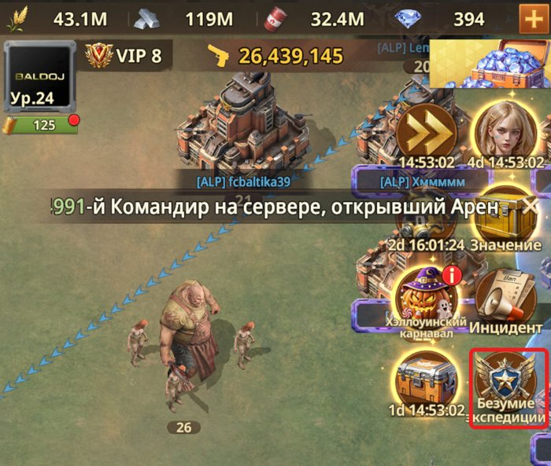
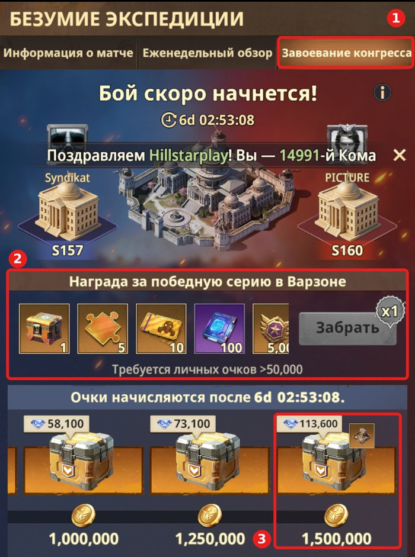

События
Как альянс проходит события: план, тактика, что нажимать.
Безумие экспедиции
Что это и почему важно. Межсерверные бои: весь наш сервер неделю противостоит другому серверу. Противник меняется каждую неделю.
Всю неделю учитываются результаты каждого игрока сервера:
- ⚔️ ГКМ
- 🆚 VS
- 🥊 Гигант (груша) в центре карты
- 🚚 Ограбление грузовиков и поездов
- 🏟️ Поле боя Пандора
Проигравший сервер вынужден защищать свою столицу от атак победителя. В субботу у нас может быть сразу два противника: соперник по VS и соперник по межсерверу. Не расслабляемся — готовимся к атакам и действуем сообща.
Задача: в субботу залетаем на сервер соперника и сжигаем дотла всё, что стоит на окраине сервера, пока не закроем все сундуки до 1 500 000 очков.
- Нажми значок «Безумие экспедиции» справа на главном экране.

- Открой третью вкладку «Завоевание конгресса» (рамка 1). Там видно, с каким сервером бой.
- Награда за победную серию в Варзоне (рамка 2) — для неё нужно больше 50 000 личных очков.
- Набивай очки до последнего сундука — 1 500 000 (рамка 3). Задания, за которые дают очки, — ниже на этой же вкладке.

Пандора
Главное — госпитали. Без них враг не лечит солдат.
Кто куда идёт
| Цель | Кто | Зачем |
|---|---|---|
| Дальние вражеские госпитали | Сильные игроки — сразу | Отжать у врага |
| Ближайшие госпитали | Остальные | Забрать и держать |
| Центральная лаборатория (когда откроется) | Только сильные игроки | Огромный прирост очков |
| Арсенал | Желательно забрать | +15% отряду к ОЗ, защите и атаке |
| Станция | Захватить обязательно | Откат телепортации сокращается до 1 минуты |
| ЭМ-башня | 2 слабых/средних игрока | −15% к силе героев врага |
Правила на поле
- На позициях не сидим: зашёл, захватил, вышел.
- Сундуки собираем разведкой.
- Враг слабее — оставляем 1–2 отряда в гарнизоне для обороны.
- Враг сильнее — снимаем гарнизон полностью, бережём солдат.
- Потеряли солдат — выходим и уступаем место запасным.
- Не забываем лечить солдат. Восстанавливать их за бусты и прочее не нужно!
Ржавый пояс
Информация будет позже.